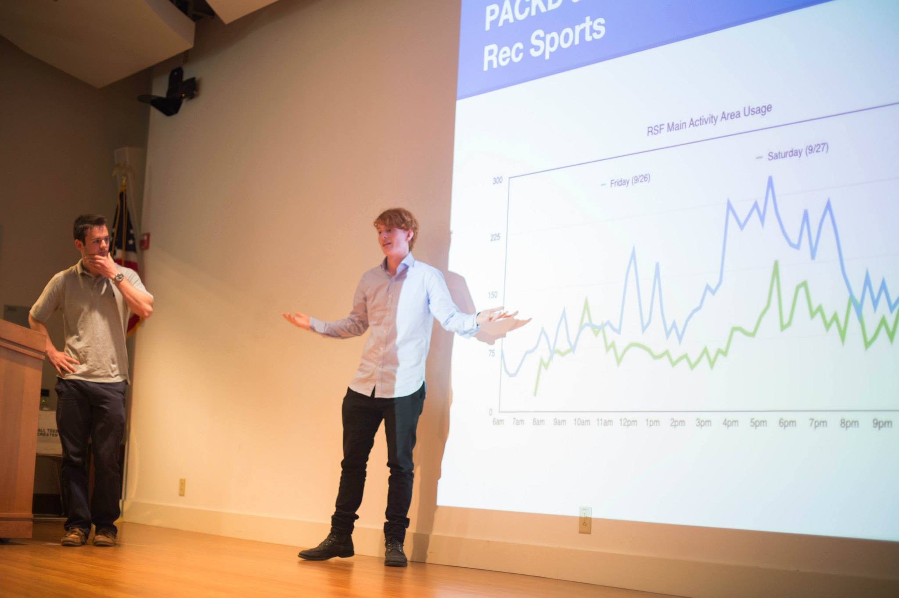
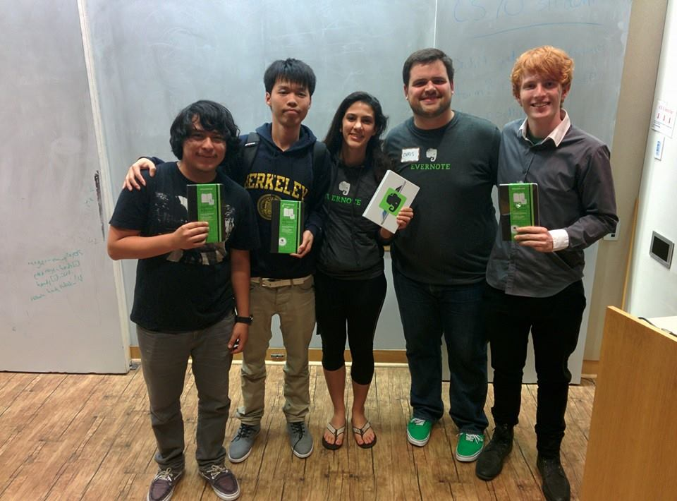
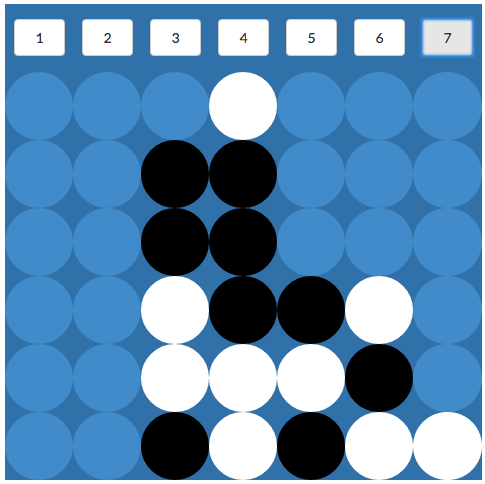
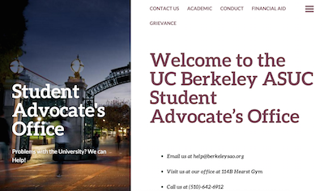
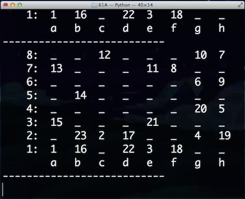
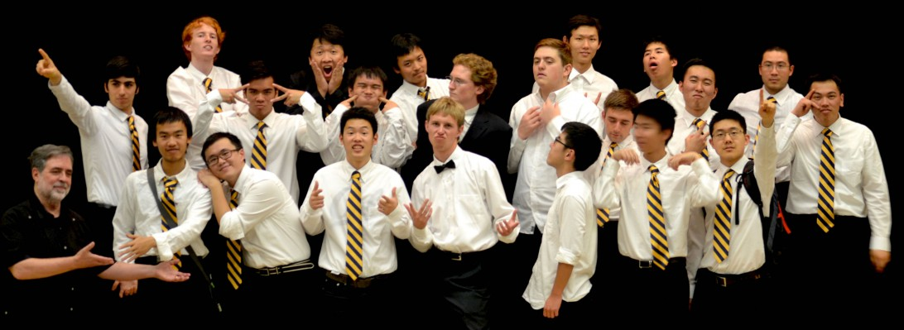
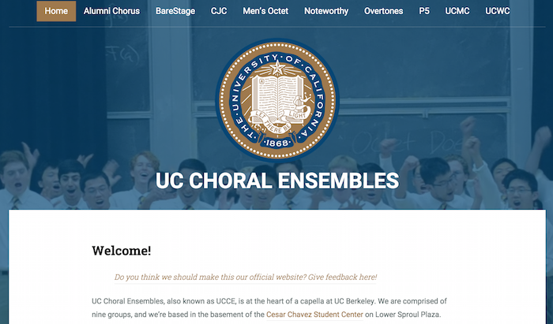

My name is Ollie O'Donnell. I'm currently studying Computer Science at UC Berkeley. Coming here all the way from Australia has certainly been challenging, but it's worth it to pursue my dream.
In my first few years exploring the world of Computer Science I've grown intellectually, solved challenging problems, and had a lot of fun in the process!
PS: It's easy to hire international students. Click here to find out how!
Check out my projects!
Completed: Sophomore Year (Spring 2014)
Tech: Back-end is Google App Engine, written in Python 2, and Java, while the database is hosted on Firebase. Front-end is Bootstrap, Javascript, Jquery, Graph.js, and of course HTML and CSS.
Teammate: Nick Rose
Awards: Finalist in STC Mobile App Competition
The app tells students and other members of the community how busy the RSF is before they go. It also provides the user with a predictive graph built from 3 years of past data from Rec Sports. We hope to save many collective hours of frustration caused by having to wait for machines, and maximize usage of a fantastic facility that works to improve physical and mental wellbeing on our campus.
 Try it out!Completed: Sophomore Year (Fall 2014)
Tech: Web implementation of Evernote API, using Bootstrap and supporting APIs such as SoundCloud.
Teammates: Tara Rezvani, Edwan Hernandez, and Rongchang Lei.
Awards: Winner of Evernote Hackathon Design Prize
Winning our first ever hackathon (28 teams competed!), we wrote an app to allow audio-synced notes on the Evernote platform. As the user takes notes during a lecture, presentation, or film, each time he or she presses enter, a timestamp with the specific minute of the recording is conveniently inserted just before the text. When the user reviews the notes, he or she can quickly access the corresponding moment in the recording.
 Try it out!Completed: Freshman Year (Summer 2014)
Tech: Straight JavaScript, with HTML and CSS for the UI.
In my first CS class at Berkeley, CS10, I worked hard to learn about minimax AI and to subsequently implement what I had learned in a Python 3 terminal-based game. I learned JavaScript in order to rewrite the project for a client-side browser interface. Try to win against my AI!
 Play Connect Four Now!Completed: Freshman Year (Spring 2014)
Tech: Full stack implementation, using remote mySQL for database.
As a caseworker at the SAO, it is my job to support students in their disputes within UC Berkeley and to instigate policy changes. The information and support we provide is vital to the lives of students. Since the website's completion it has seen steadily increasing site visits - from an average of 312 monthly views to 1066 as of February 2015.
 Explore the Site!Completed: Freshman Year (Spring 2014)
Tech: Originally written in Python 3.3.4, then ported to JavaScript with UI in straight HTML and CSS.
I wrote a solution to the Knight's Tour Problem for Python 3.3.4. While the naive solution is recursive, this code is O(N). It's super fast compared to the brute force version and it was a lot of fun to write. I've now ported it over to JavaScript for your enjoyment!
 Try the Interactive Solution!Completed: Sophomore Year (Fall 2014)
Tech: Wordpress implementation on Open Computing Facility server space.
After becoming the manager of the UC Men's Chorale, I saw a need to update the website. The old site (click here to see it!) was written in straight html, and was therefore tedious to update. The Wordpress site structure will help future generations (who may not have web experience) to keep the information up-to-date.
 Expore the site!Completed: Sophomore Year (Fall 2014)
Tech: Wordpress implementation on Open Computing Facility server space.
UC Choral Ensembles is by far the largest collection of a cappella groups on campus and has more than thirty managers and directors with various and often conflicting personal interests. For many, the website is their first impression of a cappella at Berkeley. The site needed to be easy to edit for managers of choral groups, and also attractive and user-friendly.
 Explore the site!Completed: Sophomore Year (Spring 2014)
Tech: Rather simple 3-hour implementation with Bootstrap, HTML, CSS, and the Facebook API.
In our machine structures class at Berkeley, we saw that the project specification page was rather ugly. Out of that sprang a fun and rather pointless competition to build the prettiest and most helpful version of the spec. Mine is made more readable with a font change, color change, and a split over five pages - one for each step of the project. Notably, there is a distinct Facebook comments section on each page.